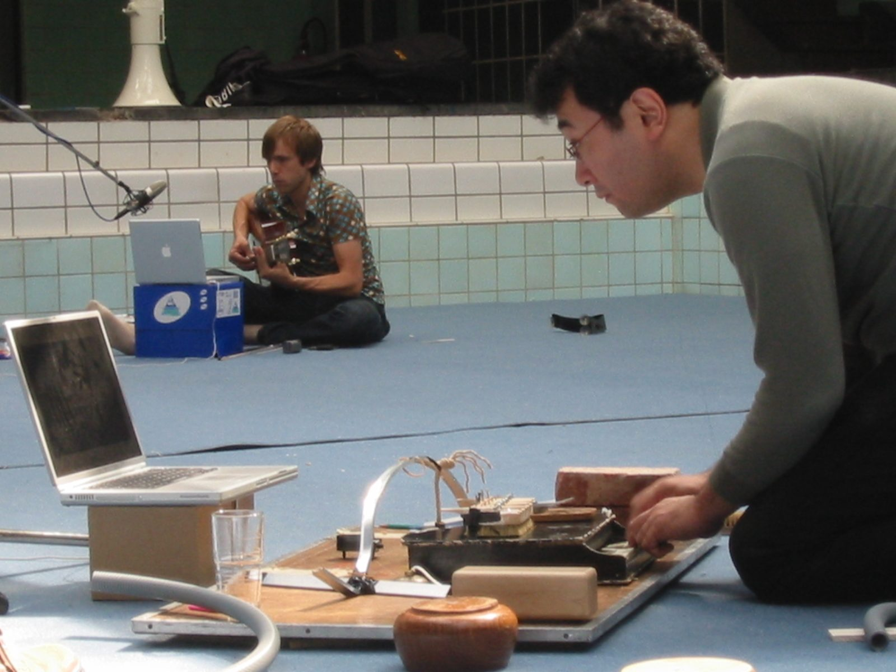
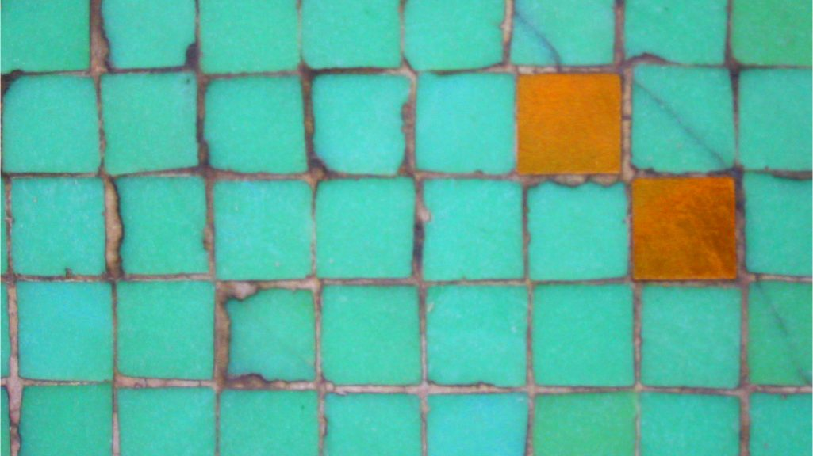
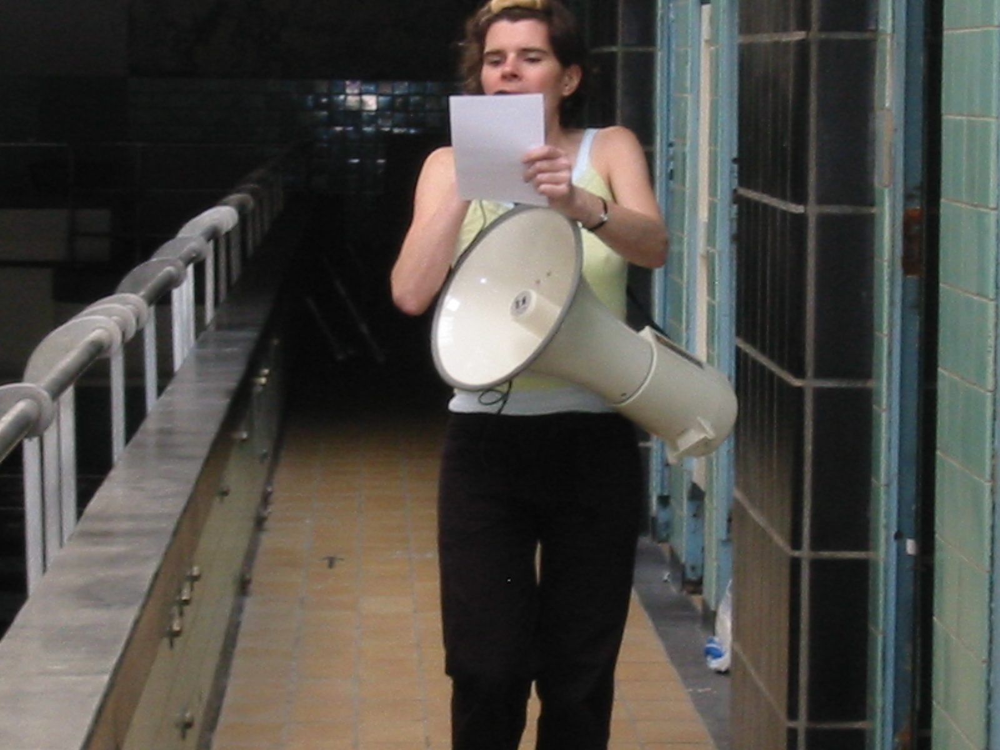
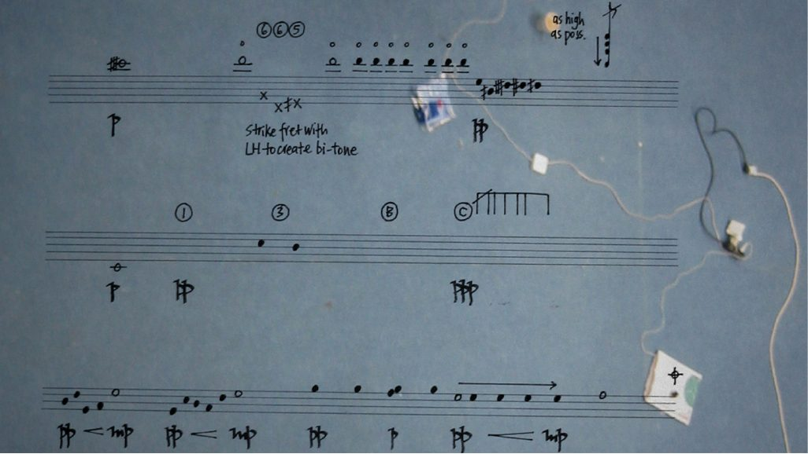

Scale was made inside a former public swimming pool on rue Berthelotstraat in Brussels, over July 2004. The tiles were still there. The change rooms were still there. A sign was still bolted to the doors warning swimmers in French to leave the water at the first sign of cold, shivering, numbness, cramps, blue lips. The building had become Bains::Connective by then, a space for residencies and experiments, but it had not been swept of what it was.

Rosemary Joy made six sculptural percussion instruments out of Queensland rosewood mahogany, each one a composed object with its own tuning — tiled, fitted with ball bearings, astro turf, etching plates, a scrubbing brush with its bristles pointing up. Cynthia Troup wrote a monologue in eleven parts for a retired Classics teacher, not yet sixty-five, who sits in the foyer of the baths after an episode of panic in the pool. I composed a score for guitarist, pianist and percussionist from photographic stills of architectural details — tiles, mortar, the grain of concrete — played from laptop screens with a moving vertical line as the conductor.
Scale is the encrustation inside a Roman cistern. Scale is the mosaic fragment lifted from the Forum and wedged in the sole of a shoe. Scale is what the music is, and how small it is, and what it listens to: the sound of a ball bearing rolling inside a wooden box, a coin sliding off a ledge, a scrubbing brush against steel wool under a closed etching plate. Cynthia’s L. B. recovers among these sounds. She does not leave the baths until she decides to.
L’inhabitable
A starting point was the sixth paragraph of L’inhabitable, the closing catalogue in Georges Perec’s Espèces d’espaces: the hostile, the grey, the anonymous, the ugly, the corridors of the Métro, public baths, hangars, car parks, marshalling yards, ticket windows, hotel bedrooms. Perec names the bath as uninhabitable. Les Bains had stopped being a bath. We had been welcomed in. The work turned the word the other way around — spent a month finding out what inhabit might mean inside a space like that, and came back with something very small.
Score
The score is a series of photographs — tiles, mortar, concrete, close-up — read from laptop screens, with a vertical line moving across each image at a fixed speed. The musicians don’t improvise. They follow the image with precision: a colour is a dynamic, a shape is a shape, a luminous green mark is a unison. The program that runs it was written by Matt Gardiner. Each piece has its own rules. The rules are strict and they are small.
Recordings
Recorded at the first performance, Les Bains::Connective, Brussels, 30 July 2004. Yutaka Oya (piano), Tom Pauwels (guitar), Fedor Teunisse (percussion).

Abstract 01 · constant uncontrolled shivering and tremors as in the early stages of hypothermia · 3′59″
Abstract 02 · indistinct yet precise, like picking at a concrete wall with a needle · 3′37″
Abstract 03 · very vague and detached, as though underwater · 4′17″
Abstract 04 · aggressive and deliberate without getting frantic · 2′50″

Interruption

The uninhabitable 01 · 1′56″
The uninhabitable 02 · 3′16″
The uninhabitable 03 · 2′21″
The uninhabitable 04 · 2′14″
The uninhabitable 05 · 2′14″
The uninhabitable 06 · 1′23″
The uninhabitable 07 · 4′31″
Sculptural percussion instruments
Rosemary Joy’s sculptural percussion instruments for Scale are not props. Each one is a composed object with its own tuning, its own interior world, its own set of rules about what can be dropped or scraped or spun inside it. The Shrapnel Box: four compartments under six old etching plates, each plate tuned to within a quarter-tone, and beneath them scrunched plastic, steel wool, fabric, a guiro, coins in local currency, a scrubbing brush with the bristles pointing up. The Munitions Factory: thirteen holes in the lid, each leading to a different sound — a bell tuned to C, a corrugated plastic tube, a serrated metal track like a clock being wound up. The Spinal Box. The Tile Box. The Floor Covering Box. The Astro Turf Box. All made in Queensland rosewood mahogany.
The uninhabitable of L. B.
L. B. is a retired teacher of Classical history. She has just come out of the water. She is sitting against a wall in the foyer of the baths. Over eleven short parts she tunnels backwards — to her mother, to the ice-cream vendor’s van, to Nero’s palace, to the cisterns at Sette Sale, to Seneca’s suicide, to a tiny mosaic fragment from the Forum. She is not in crisis and she is not not in crisis. At the end she leaves, before the attendant returns.
The uninhabitable of L. B. — Cynthia Troup, Brussels 2004 – Melbourne 2006 · download PDF
Photographs
First performance
Scale was first performed on Friday 30 July 2004 at Les Bains::Connective, 34 rue Berthelotstraat, Vorst/Forest, Brussels, by Yutaka Oya (piano), Tom Pauwels (guitar) and Fedor Teunisse (percussion), with coordinator Marie-Hélène Elleboudt. The music ran forty-five minutes across twelve pieces — Abstracts 01–04, an Interruption, a pause, and The uninhabitable 01–07. Cynthia’s text was distributed to the audience to read during the performance. Everyone sat on the floor.
The music is quiet. Dynamics were to follow the intensity of colour in the photographs — monochrome and grey tones soft, lurid and fluorescent colours louder — but loud in this context is not loud. A reviewer in De Tijd the morning of the premiere called it klein werk: small work. That is correct. The work rewards the kind of attention a person pays to their own breathing when they notice it.
Further reading & links
Credits